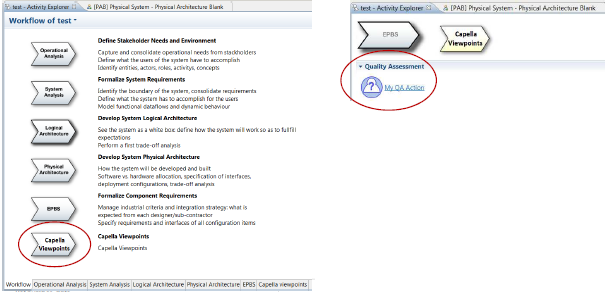

One can define new Pages, Sections or Activites for the Activity Explorer.

Contributions to Activity Explorer can be defined using VPDSL.
Contributions to Activity Explorer are defined the .activityexplorer.vptext file of the VPDSL plugin.
More information can be found following the Activity Explorer tutorial and in the Viewpoint Development section.